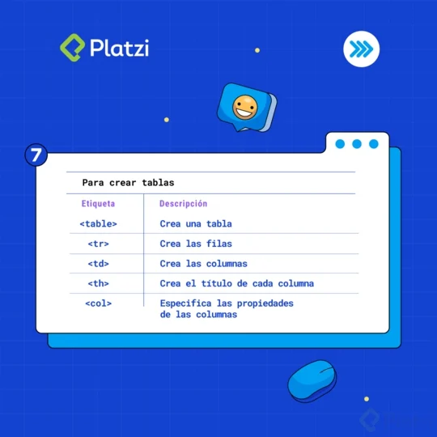

Aprender qué es HTML y cómo usarlo es clave cuando quieres entrar al mundo del desarrollo web. Es duro al inicio, pero el esfuerzo vale la pena una vez que llegas a la meta de convertirte en desarrollador o desarrolladora web.
En HTML la gran mayoría del tiempo te la pasarás usando etiquetas. Tú y yo sabemos que son DEMASIADAS las que existen, y es casi imposible aprendernos todas de memoria, así que te preparamos un regalo que te va a gustar. 💚
Hemos creado una guía completa con las 44 etiquetas HTML que debes conocer. Además, al final del blogpost encontrarás una imagen descargable que contiene todas las etiquetas.
Antes de empezar, debes entender cuál es la estructura de una etiqueta HTML. La gran mayoría están compuestas por:
-dab98625-3207-411b-b482-4c5aebbab9d9.webp)
Apertura y cierre
La apertura y el cierre siempre llevan el nombre de la etiqueta HTML que usarás, y son las que sirven para delimitar el contenido de la misma.
Atributo y valor
El atributo son distintos ingredientes o modificaciones que puedes hacer a la etiqueta. Como por ejemplo colocarle un ID, especificar algún evento (como los casos de onsubmit y onclick), o modificar el aspecto visual (como cambiarle el color a un texto).
El valor es la especificación de estas modificaciones. ¿Qué debe suceder después del onsubmit? ¿Qué color debe tener el texto? ¿Qué ID tendrá la etiqueta?
Contenido
Es la información que queremos que sea afectada por la etiqueta con sus modificaciones (atributos).
Ahora que entendemos esto, 👇 vamos con las etiquetas.
Son las primeras etiquetas que usas al crear tu archivo HTML. Necesarias para casi cualquier proyecto.

Esenciales para cuando deseas darle funciones, jerarquías y estilos diferentes a tu texto. Desde las etiquetas “h” que sirven para jerarquizar el texto de una página, hasta las famosas negrillas o cursivas.

¿Deseas insertar un video, una imagen, un audio o un video de YouTube? Estas son tus etiquetas HTML. La más versátil de ellas es iframe, te permite insertar contenidos de otras páginas web.
Si quieres darle orden al texto, las imágenes y todo lo que coloques en tu página web, usa estas etiquetas. Desde crear listas ordenadas de texto, hasta el por el que en algún momento sufrimos intentando centrarlo.

Las tablas son MUY útiles, especialmente cuando traemos información de una base de datos y queremos darle orden y formato a los datos.
Y por último, las de creación de formularios. ¿Quieres crear la sección de contacto? ¿O el paso de registro o login de un usuario? Estas son tus etiquetas.

Si deseas aprender más sobre esto y otros aspectos del desarrollo web, te invitamos a conocer los cursos para web developer de Platzi.
Y aquí va el regalo que te prometimos al inicio del post. Una imagen descargable con todas las etiquetas que mencionamos aquí.
Lee: 37 ejemplos de infografías que te asombrarán
Úsala como fondo de pantalla en tu computador, o como una imagen de apoyo para cuando estudies o programes.